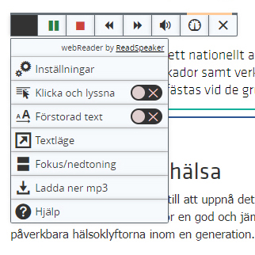

Vi använder dagligen internet i våra liv via surfplattor, datorer och mobiltelefoner för att läsa information, ta del i sociala medier, handla i webbshoppar eller spela online, etc. Enligt statistik för 2021 finns det över fyra miljarder aktiva internetanvändare. En del av dom har svårt att använda digitala tjänster i sina dagliga liv på grund av olika funktionshinder. I detta sammanhänga vill vi berätta om tillgänglighet, dess innebörd, befintliga stöd och vad du som utvecklare skall tänka på.
Vad är Tillgänglighet
Tillgänglighet betyder att tjänster och produkter skall vara anpassade för alla människor som använder dom. Det största fokus i tillgänglighet är att stödja alla människor med olika typer av funktionshinder och andra möjliga användare i olika kontexter.
Tillgänglighet har utvecklat olika teknologier, tjänster eller apparater för att stödja funktionshindrade. Hörselskadade och döva använder hörselinplantat. Personer med synnedsättning använder skärmläsare vid datoranvändning. Rullstolsbundna med låg rörelseförmåga använder ramp eller hiss.
Om en miljö, tjänst eller produkt inte har såna inbyggda funktioner så är den inte tillgänglig för alla.
Men som sagt så måste man komma ihåg att tillgänglighet inte bara handlar om att stödja funktionshindrade eller om att bygga nya teknologier eller produkter för att stödja dem. Tillgänglighet handlar om att anpassa tjänster och produkter till alla olika typer av målgrupper. Andra aspekter som tillgänglighet fokuserar på är layout, design, språk och möjligheter som kan förbättra livskvalitet.
Tillgänglighet har därför blivit en huvudpunkt i olika design principer, såsom webb-design och interaktions design. Vi kommer att fokusera på den förstnämnda och hur vi kan utveckla tillgänglighet för webben.
Tillgänglighet i webben
Webben idag är den största digitala plattformen för att utveckla tjänster. Från tidigt 90-tal till idag har antalet internetanvändare ökat dramatiskt och används mycket i olika aspekter som e-handel, söka jobb, hitta information, utbildning, hälsa och mycket mer. Alla kan dock inte ta del av vad som finns på nätet, främst personer med funktionshinder, såsom döva, blinda eller personer med dyslexi. Som den största plattformen så är det därför viktigt att se hur tillgänglighet har tillämpats på webben.
Webben skall vara designad för alla människor, men det finns dom som har svårt att interagera med vad som finns på en webbplats, såsom funktionshindrade eller andra med begränsad datavana. Tillgänglighet på webben innebär anpassade webbplatser för människor med funktionshinder såsom motiriska, hörsel, syn, tal eller kognitions problem. Med inbyggda verktyg eller funktioner på en webbplats kan funktionshindrade människor läsa och ta del av vad som finns där. Bra strukturerat innehåll och design gör det lättare för användarna att navigera sidan, och även skärmläsare kan göra ett bra jobb. God färgkontrast, anpassade knappar eller länkar, underlättar läsandet för människor med nedsatt syn. Det handlar om att de ska kunna förstå hur man navigerar, interagerar, men viktigast av allt är att alla ska kunna bidra på webben på ett jämlikt sätt.
När man pratar om tillgänglighet på webben så är fokuset på funktionshindrade och vilka teknologier eller design man kan åstadkomma. Men det egentliga målet är att webbsidor skall vara anpassade för alla, oavsett om man har funktionshinder eller inte. Exempel på det är gamla personer med begränsade förmågor och små skärmar, eller människor som har låg internet uppkoppling. Tillgänglighets tekniker används också i helt andra syften som att använda videotext på bibliotek, där man ska vara tyst, eller att använda skärmläsare vid multi-task syften.
Som utvecklare på webben är det väsentligt att kunna stödja tillgänglighet på sin sajt. Det handlar alltså inte bara om att skapa högkvalitativa webbsidor, utan även om att alla skall kunna ta del av deras tjänster och produkter. Tyvärr är det så att det finns många webbplatser idag som inte har stöd för tillgänglighet. Det kan komma att bli en skyldighet, inte en lyx, för en webb-utvecklare att skapa tillgänglighet på ens webbplats.
W3c (World Wide Web Consortium) har utvecklat standardiserade riktlinjer för tillgänglighet på webben kallad Web Content Accessibility Guidelines (WCAG). Det kan ges som stöd för den som utvecklar hemsidor med tillgänglighet. Det finns fyra huvudprinciper:
- Möjligt att uppfatta: bra färgkontrast, klar text och stöd för hjälpmedel
- Möjligt att använda och hantera: Gränssnittet skall kunna navigeras lätt och knappar och andra element måste ha en yta som är klickbar.
- Möjligt att begripa: Innehållet måste vara begripligt för användarna
- Robust: Innehållet måste utvecklas med olika webb-standarder, såsom följa HTML-kod-standard eller kod som valideras.
WCAG tas fram som den huvudsakliga riktlinjer för tillgänglighet och EU ställer krav på att myndigheter och offentliga aktörers webbplatser skall uppnå minst nivå AA i WCAG 2.1 riktlinjer.
Exempel på tillgänglig design
Vi skall nu ge sex konkretiserade exempel på hur man kan designa tillgänglighet på webben.

Inbyggda funktioner
Många sajter har inbyggda funktioner för att stödja främst personer som har nedsatt hörsel. Döva eller hörselskadade har dålig koll på vad som händer när tidsbaserad media spelar ljud och videos. Det skall finnas inställning för att slå på textbeskrivningar till videos samt ljud. Vissa sajter har också stöd för teckenspråk. Många videosajter som YouTube översätter ljud till text automatiskt.

Tydlig kontrast mellan färger
Förgrundsfärg och bakgrundsfärg måste ha en tydlig kontrast mellan varandra för att öka läsbarheten. Det kan gälla text i bakgrundsfärg, bilder, gradienter, knappar och andra element. Det gäller för personer med nedsatt syn som dyslexi eller färgblindhet.
Kontrastvärdet kan mätas med programvara eller online tjänster. Enligt WCAG rekommenderas att tröskelvärdet är 4,5:1 för normal och 3:1 för större text.
Man kan också överväga att låta användarna välja kontraster.
Skapa design för olika skärmar
Människor surfar på webben med datorer, mobiler eller surfplattor. Innehållet på en hemsida måste korrigeras enligt dess skärmar. Mobilskärmar har mindre storlek och kan därför inte presentera allt innehåll på samma sätt som en dator kan. Element som brödtext, rubriker och menyrader måste anpassas för en mindre skärmyta. Se till att texten är läsbar.
Navigation med tangentbord
Alla har inte tillgång till mus och vissa gillar att navigera med tangentbord. Människor som inte kan se eller har skadat armen, använder medel som tangentbort och röststyrning.
Se till att webbsidan även kan navigeras helt med tangentbord.
Gruppera relaterat innehåll korrekt
Layout är en väsentligt del i att skapa en läsbar hemsida. Se till att text och allt innehåll tillhör rätt text grupp. En bild i en artikel som är förskjuten neråt till en annan artikel kan tolkas på olika sätt.
Använd radavstånd och rubriker för att undvika detta problem.
Korrekt feedback
Det skall vara tydligt vilken feedback användaren får när hen interagerar på en webbsida, som tex felmeddelande i ett forumlär om ändringar har gjorts på en sida eller fel data har matats in.
Instruktioner skall vara tydliga för användarna som att exempelvis markera rekommenderade fält med *(stjärnor).
Som utvecklare
Om du jobbar på webben och är en UX/UI designer eller Frontend-utvecklare finns det olika sätt för att åstadkomma tillgänglighet med hjälp av kodrader. Här följer några exempel.
Alternativ text för bilder
Bilder skall komma med en alternativ text. Bild element som img eller picture kommer med en "alt" attribut som man kan beskriva. "Alt" attributet är huvudsakligen till för skärmläsare som är blinda. Om det händer att bilden på hemsidan inte kan visas så dyker en alternativ text upp.
<img src="cute_puppy.jpg" alt="A very cute puppy playing" width="500" height="600">
ARIA attribut
Aria (Accessible Rich Internet Applications) är en samling attribut som gör det lättare att implementera tillgänglighet genom att beskriva gränssnitts olika komponenter. Attributet används av sökmotorer och av, framför allt, skärmläsare för synnedsatta människor.
Den har tre delar: Role, States och Properties. Role definierar vilken typ av gränssnitt det är, medan States och Properties definierar vad dom gör och dess beteende.
Här är ett exempel på hur man kan skapa radio knappar med aria:
<div role="radiogroup" aria-labelledby="gdesc1">
<h3>Pizza Crust</h3>
<div role="radio" aria-checked="false" tabindex="0">Regular crust</div>
<div role="radio" aria-checked="false" tabindex="-1">Deep dish</div>
<div role="radio" aria-checked="false" tabindex="-1">Thin crust</div>
</div>
Det kan vara frestande att skriva aria element i alla sina interaktiva element, men det finns ett mer meningsfullt sätt genom att skriva semantiska taggar som finns inbyggt i HTML5, som vi skall diskutera härnäst. ARIA används mycket när elementet i HTML5 har dålig support för tillgänglighet.
Ange semantiska taggar
Bra strukturerade och semantiska taggar kan hjälpa bl.a. människor med skärmläsare eller andra hjälpmedel, där såna apparater läser vad som finns på DOM (Document Object Model). Dessa hjälpmedel kan lättare ange vad en "tag" eller ett innehåll betyder även för en utvecklare. En skärmläsare eller andra hjälpmedel kan också förstå dess struktur och kan lättare navigera runt sidan.
De första semantiska taggarna för att strukturera innehåll bör inledas med header, main och footer, och taggar som article, aside, nav kan gruppera text, menyer, bilder eller dylikt. div och span har ingen semantisk mening och kan inte ha tillgång av tillgänglighets API eller användning av tangentbord. De två taggarna skall bara användas för layout.
Anpassa efter skärmstorlek
Alla har inte tillgång till datorer och mobilen är nu den huvudsakliga källan för internetanvändning. Du måste se till att knappar, text och allt innehåll anpassas till mindre skärmar, särskilt för de som inte har tillgång till datorer eller har dålig syn.
"Mobile first" är ett sätt att bygga en webbplats till mobiler innan man skapar en för datorer. De flesta använder mobil för att surfa på nätet och därför rekommenderas det att man designar sin webbplats i enlighet med "mobile first".
I din responsiva kod så måste du se till att skärmstorlek står efter min-width
@media screen and (min-width:768px){
...
}
Gör en logisk tab ordning
Se till att tab ordningen följer en logisk ordning, då vissa användare navigerar sidan med hjälp av tangentbordet, och kan ändra fokus mellan elementen. Den vanligaste är tab-knappen, men även piltangenter kan användas.
tabindex attributet används för att definiera i vilken ordning interaktiva element skall ha fokus när användaren knappar på tab. Den har tre värden, -1, 0 och 1 eller mer.
Element med 1 eller mer följer fokusordning.
Element med 0 presenteras i den ordning de kommer i koden.
Element med -1 plockas bort från fokusordningen.
tabindex kan vara ett alternativ sätt för utvecklare att ändra tab ordning. I enlighet med många så rekommenderas inte tabindex. En kod som följer en logisk ordning rekommenderas.
Text av
Richard Walton
Länkar för vidareläsning
Easy Checks – A First Review of Web Accessibility
En checklista för att kolla om din sida mtes tillgänglighet (text på engelska)
A Primer to Web Accessibility for Designers
Varför tillgänglighet är viktigt (text på engelska).
Vägledning för webbutveckling
Svensk sida om tillgänglighet